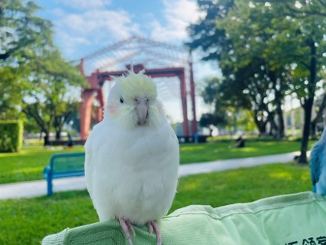
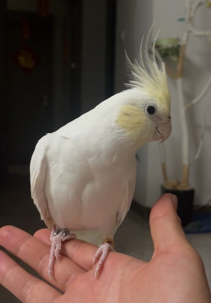
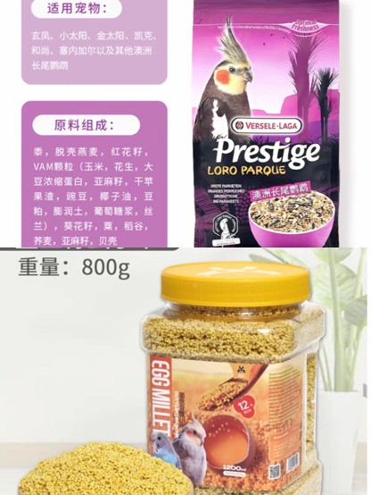

日常玩乐
金吉的日常充满了探索与欢乐。它喜欢在笼外自由活动，探索新玩具，享受与主人互动的每一刻。无论是一起学习新口哨，还是安静地站在主人肩头陪伴，金吉总能用最简单的方式治愈人心。

金冠百趴 · 温柔的治愈系小鸟
金吉是一只典型的中小型长尾鹦鹉，体型小巧圆润，尾巴修长优美。最引人注目的特征莫过于头顶那撮可立可收的羽冠——它就像情绪的"晴雨表"，立起来时代表好奇或警惕，平贴时则表示放松惬意。金冠百趴的配色让金吉拥有一身柔和的金黄色头冠与洁白的体羽，整体气质温润如玉，辨识度极高。


金冠百趴的独特配色，加上那标志性的羽冠，让金吉在一众鹦鹉中脱颖而出，回头率极高。
金吉性格腼腆但非常粘人，一旦建立信任就会主动靠近，是典型的"温柔型"伴侣鹦鹉。
相比大型鹦鹉，玄凤的叫声轻柔悦耳，不易扰民，是公寓和家庭饲养的绝佳选择。
金吉身体素质好，适应能力强，只要日常照料得当，很少生病，让人省心。
作为公玄凤，金吉天生具有模仿旋律的天赋，会吹多首口哨曲目，是家中一道独特的音乐风景。
金吉的日常饮食以谷物粮 + 蛋小米为主食，这是玄凤鹦鹉营养均衡的基础。辅食方面搭配少量新鲜蔬菜，补充维生素和膳食纤维。在日常保健上，主人需要时常观察金吉的肠胃状况，适时补充益生菌和电解质，确保消化系统健康运转。

谷物粮 + 蛋小米为主，搭配蔬菜水果，辅以益生菌、电解质保健。饮食结构清晰，新手也能轻松掌握。
玄凤天性胆小，需要一个安静、稳定的生活环境。避免突然的巨响和频繁的环境变动，让金吉感到安全。
每天抽出固定时间与金吉互动、放风、训练口哨，这不仅是娱乐，更是建立深厚情感纽带的关键。
饮水每日更换，笼底托盘定期清理，栖架和食具每周消毒，保持卫生是预防疾病的第一道防线。
玄凤喜欢水浴，每周提供一次浅水盆让其自行沐浴，或用喷雾瓶轻柔喷湿羽毛，保持羽毛光泽与健康。
玄凤鹦鹉寿命可达15-20年，是一份长久的陪伴承诺。金吉将用十余载的时光，温柔地守护在主人身边。
金吉的日常充满了探索与欢乐。它喜欢在笼外自由活动，探索新玩具，享受与主人互动的每一刻。无论是一起学习新口哨，还是安静地站在主人肩头陪伴，金吉总能用最简单的方式治愈人心。
玄凤鹦鹉是温柔、安静、治愈、好养活的完美入门级宠物鹦鹉。没有凶性、不会吵闹、颜值高、通人性，既能安静陪伴，也能吹歌互动，是无数养鸟人心中的"治愈小鸟"。如果你想要一只温柔粘人、安静不麻烦、能长久陪伴的小宠物，玄凤鹦鹉永远是最优选择之一。